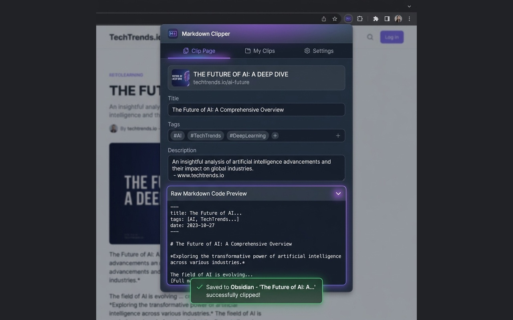
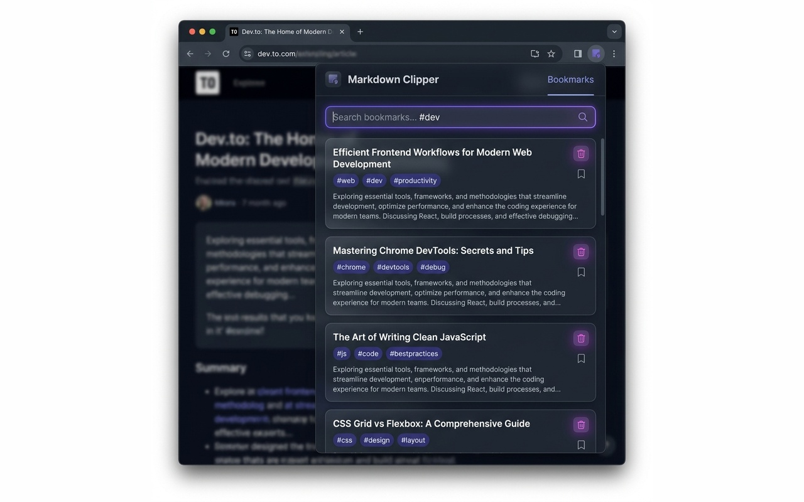
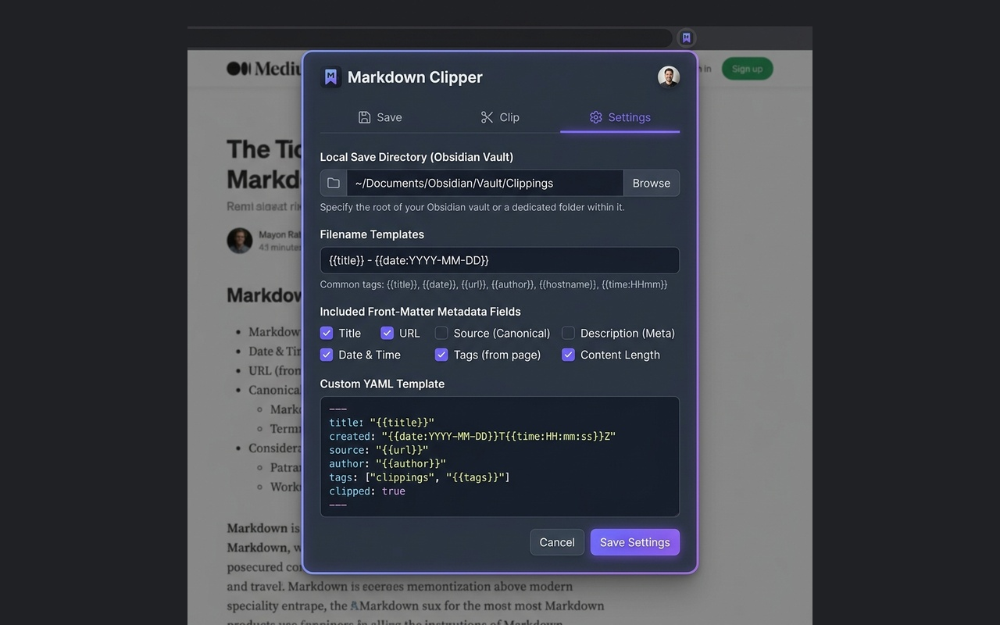
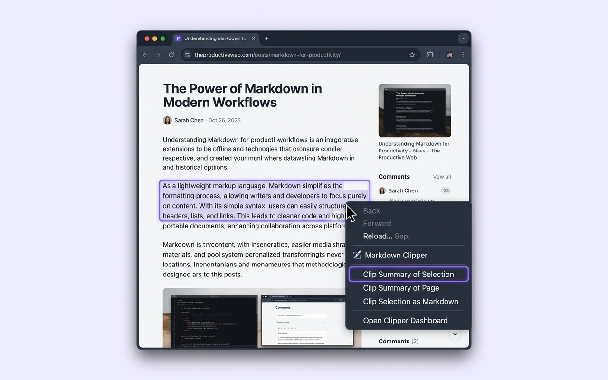

Markdown Clipper is an offline-first browser extension that extracts article content, generates local AI summaries, and saves them directly into local folders using the browser's native File System Access API. Bypasses the downloads manager entirely.

A full set of utilities to clean, summarize, save, and search webpages locally.
Summarize page contents on-demand. Choose between local on-device models for 100% offline free processing (Gemini Nano) or Cloud Gemini API for streaming high-quality summaries. Includes a structural extractive fallback for offline safety.
Query your saved bookmarks directly inside the extension popup. It scans your folders, reads `.md` files, parses YAML metadata, and yields real-time filtered results matching titles, tags, and summary body snippets.

Write generated files silently straight to your Obsidian Vault using the File System Access API. Chosen folders are preserved securely in IndexedDB across popup closures so you can clip without distraction.

Clip webpages instantly. Highlight key passages and select "Clip Summary of Selection" or right-click anywhere to capture the page. Integrates background IndexedDB writes with Downloads API fallbacks.

From clean HTML scraper to structured Markdown notes in three steps.
Open settings, click "Select Folder" and pick your local folder or Obsidian vault directory. The permission handle is saved securely in IndexedDB.
Trigger clipping from the popup or context menus. The scraper sanitizes the page DOM, cleans headers/footers, and streams the AI summary.
The Markdown file is silently written to your folder. Open the Bookmarks tab to run full-text search queries on your saved clips instantly.
Have questions about privacy, configuration, or custom formats? We have answers.
No. Markdown Clipper is designed offline-first. If you use **Chrome Built-in AI (Gemini Nano)** or the **Extractive Fallback**, all text extraction, parsing, summarization, and disk saving occur entirely on your local machine. No data is collected, stored, or transmitted. If you use **Cloud Gemini API**, only the article text is sent to Google's generative models API using the API key you provide.
Yes. The settings tab features a customizable YAML Template text field. You can define your own placeholders (such as {title}, {url}, {date}, {description}, {author}, and {tags}) and change their ordering or keys to fit your Obsidian vault's metadata standards.
To protect your local disk files, Google Chrome requires user interaction to re-verify directory access permissions whenever Chrome restarts. If access has expired, the Bookmarks tab will display a "Grant Folder Access" button. Clicking this button grants permissions to resume silent direct-saving and folder scanning.